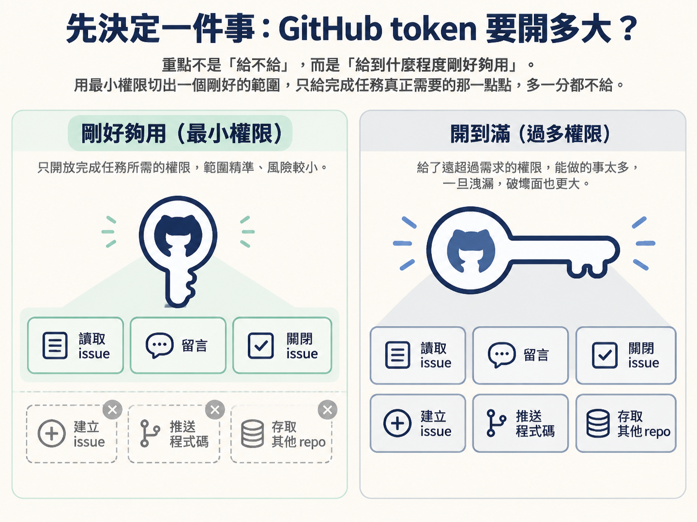
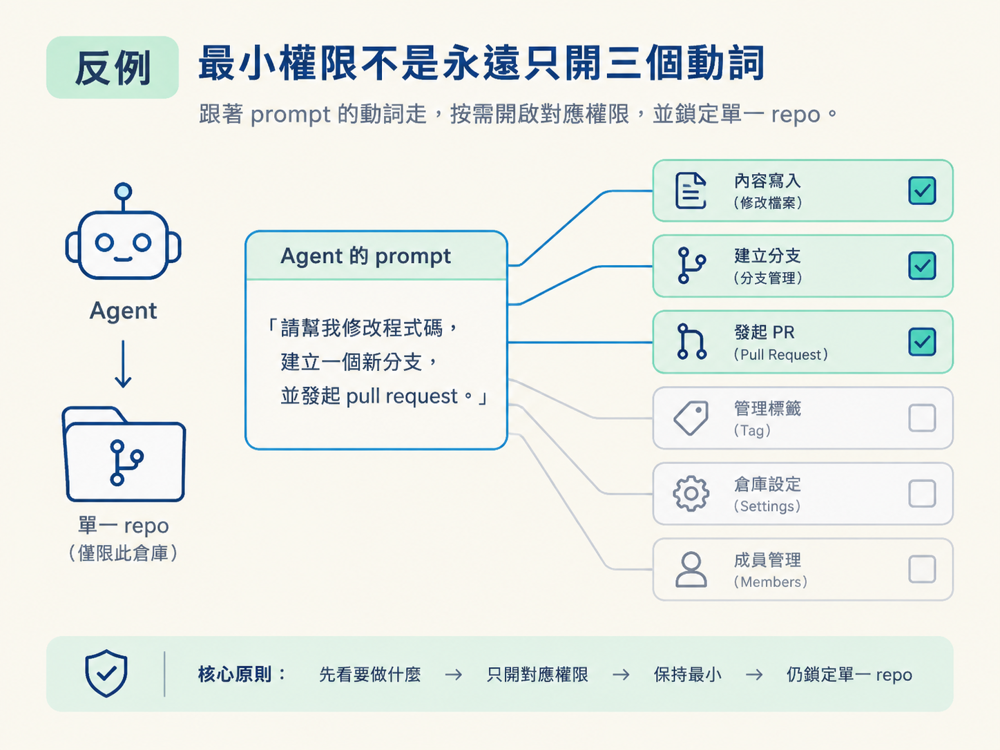
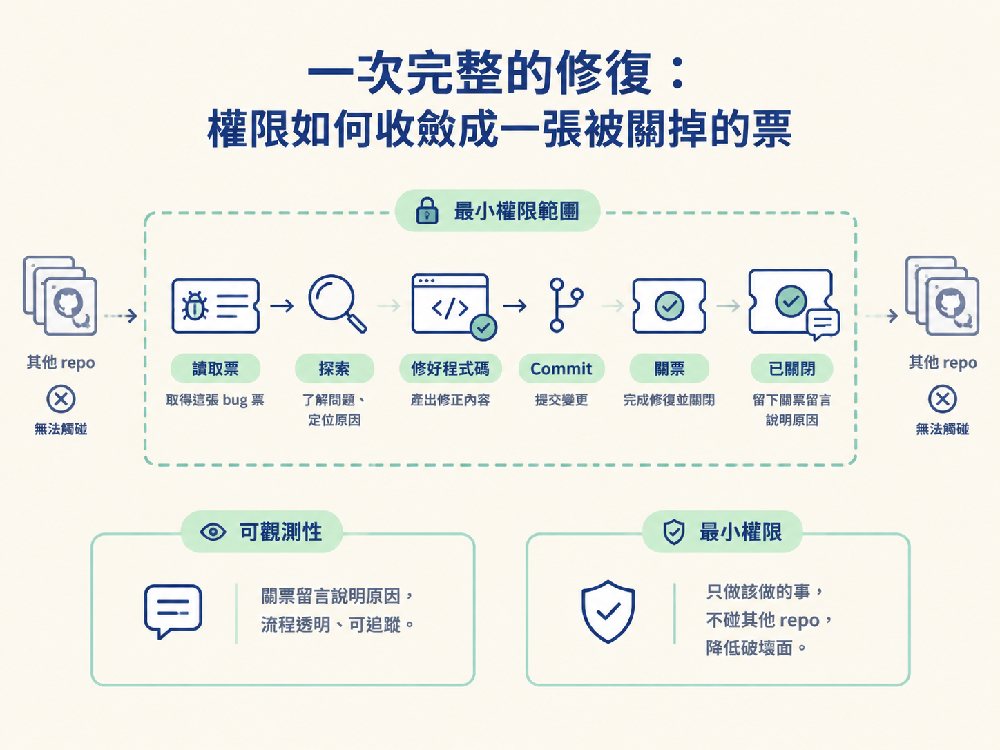

學到這裡，你可能會有個疙瘩：前面幾節一直理所當然地講「把 token 放進 .env」，可是把自己的 GitHub 存取權交給一段會自己判斷、自己行動的程式，聽起來就是件危險的事。
這個擔心完全合理。agent 的速度比人快得多，一旦它的判斷偏了，或者在探索過程中讀到一段夾帶惡意指令的內容（prompt injection），手上又握著太大的權限，就有可能去動你不希望它動的東西。
但反過來說，如果完全不給它憑證，它就沒辦法讀你的 issue，也沒辦法把票收掉，整條迴圈就像車子沒有輪子，根本跑不起來。
所以真正的問題不是「給不給」，而是「給到什麼程度剛好夠用」。這一節要做的決定，就是用最小權限（least privilege）切出一個剛好的範圍：只給完成任務真正需要的那一點點，多一分都不給。

用最小權限原則決定 agent 的 GitHub token 該有哪些權限，並說出一次成功修復的完整流程，以及可觀測性從何而來。
| 做法 | agent 能做什麼 | 風險 |
|---|---|---|
經典 token、開大範圍的 repo 權限 | 讀寫你所有 repo、建立與刪除 issue、推程式碼、碰設定 | 最高。一旦被誤用或外洩，影響面遍及整個帳號 |
| 精細權限 token，限定單一 repo 的 issues | 讀 issue、留言、關票（可依需求再加特定動詞） | 低。就算出事，範圍被鎖在一個 repo 的 issue 上 |
| 完全不給 token | 無法呼叫 gh，碰不到 GitHub | 無，但整條 issue 佇列迴圈無法運作 |
GitHub 提供的 fine-grained personal access token，正是為這種情境設計的。你可以指定它只能存取哪些 repo、只能做哪些動作。這門課要選的是中間那一列：一個範圍很窄、只夠跑完迴圈的 token。
具體來說，這個修復迴圈需要 agent 做三件事：讀取 issue、在 issue 上留言、關閉 issue。
清單裡特別沒有「建立 issue」。這是刻意的：在這個流程裡，開票是「人」或「規劃階段的 skill」在做的事；agent 只負責從既有佇列挑任務、動手、收尾。既然它的 prompt 用不到建立 issue，就不該把這個權限塞進 token 裡。
面對一個新專案或新流程，可以用下面三題把權限切出來。它們就像權限的濾網，讓不需要的能力留在外面。
gh 指令列出來，指令用到什麼，才給什麼。讀、留言、關票，就只給這三個。最小權限不是「一律只給讀取、留言、關票三個動詞」，而是「跟著 prompt 的動詞走」。流程真的改變時，權限也可能要跟著加。
例如，之後如果你把規劃流程也接上佇列，讓 skill 用 gh issue create 把 PRD 變成一批任務，那麼執行這段流程的 agent 就確實需要建立 issue 的權限。這時才把 create 加上，而且仍然限定在那個 repo。
同樣地，如果 agent 要開 pull request、推分支，就會需要 contents 或 PR 相關的寫入權限。規則沒有變：先看它要做什麼，再給對應的權限，能少則少。

最該避免的是「反正方便，先開到滿」的心態。權限一旦給大，就很難再收回；而在日常運作中，你往往也不會注意到它多拿了哪些能力。
把鏡頭拉回實際跑一次，看看這套設定在最小權限下，如何完成一輪修復。
這次的任務是一張很小的 bug 票，內容只有幾十個 token，大意是：「在 dev UI 的使用者選擇器裡，選完使用者後面板不會關閉。」
agent 開跑後先探索 repo，找到對應的 dev UI 元件與 API 路由。接著它做出診斷：選了使用者之後，表單是用 client-side navigation（React Router）送出的，導致下拉選單的 open 狀態一直停在 true，所以永遠不會關。
它改好程式碼，跑過 pre-commit 檢查（全部通過），建立 commit，然後呼叫 gh issue close 並附上說明。最後，它吐出完成訊號 no more tasks，整輪用掉大約三萬 token 的 context。
你回到瀏覽器，切換使用者、選了 Alex Rivera，面板這次乖乖關上了。修復確認。
這次流程有兩點收穫。
第一是可觀測性。你之所以知道它為什麼關掉這張票，是因為關票時它把原因寫在留言裡。你不需要重新翻 commit，猜測它做了什麼；它已經把判斷留下來。
第二是範圍。整趟流程中，它只需要讀取這張票、處理這張票，再把這張票關掉，沒有能力去動你的其他 repo。這就是最小權限的價值：它做了對的事，同時沒有多餘的破壞面。

問題不是「要不要把 GitHub token 給 agent」，而是「給到什麼程度剛好夠用」。用 fine-grained token 限定單一 repo，只開放 prompt 實際用到的動詞，這門課是讀 issue、留言、關票，不含建立 issue。判準是三個問句：它會用哪些動詞、它需不需要開票、它要碰幾個 repo。當後續流程真的需要建立或推送時，再逐一加上對應權限，範圍仍鎖在單一 repo。一次順利的修復會留下關票留言，這就是可觀測性；而它全程只碰了該碰的那張票。
走完這四步，你手上的迴圈已經完整：agent 會自己從你的私有佇列挑任務、動手實作、跑回饋、commit，最後把票收掉並留下說明。你從「每次指定一份計畫」前進到「維護一條佇列」。
下一步的延伸，是把 PRD 與 plan 也整批變成佇列裡的 issue，讓規劃與實作可以平行進行，那會是下一個節點的主題。